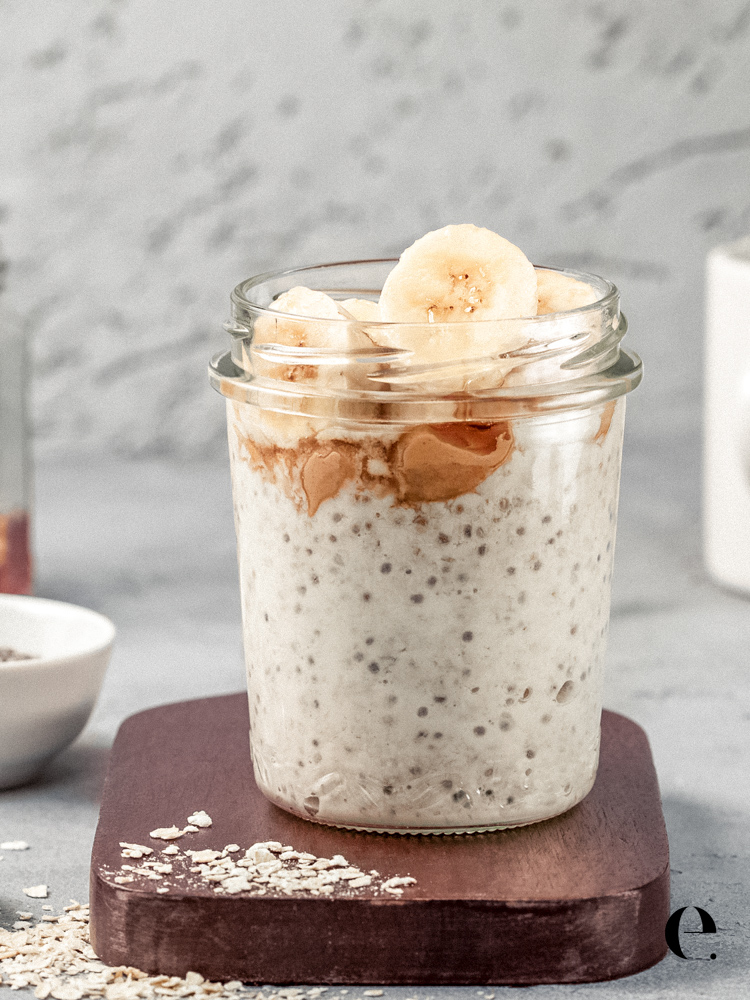

Over Night Oats

Description
Over night oats is a healthy snack for any health concious person.
With only a few ingredients you can make a solid base for over night oats that
can be mixed with any other sweet ingredients to spice up the dish.
Ingredients
- Oats: Any oats will do as long as you do not use steel cut oats.
- Milk: This can be substituted with water or any other type of milk like almond milk or coconut milk.
- Chia seeds (optional): Chia sees are packed full of nutrition but can be easily done without.
- Greek or vegan yogurt (optional): A good boost of protein and gives the oats a tangy flavor.
- Vanilla extract (optional): This enhances the flavors that go into the oats as well as a good substitute for sweetners.
- Toppings: This part os all based on what you want inside of the oats. You can go with fruits like baananas, strawberries, blueberries, etc.. Or if you are feeling more sweeter, you can add syrups and candies.
Steps
- First you want to start by combining your oatmeal and chia seeds.
As a reference we go with the ratio of 1 part oats +
1 part milk + 1/8 part seeds so we can have a balance.
Take your ingredients and put it within a glass jar. (any glass cup or container will do.)
- Next you want to add as much greek yogurt as you want. After, drizzle the vanilla extract on top.
- You can add sweetner at this point to go along with the vanilla extract or leave it as is. Pour your milk in and mix the jar until you see no clumps. Seal it with a lid and let it chill in the fridge for at least 2 hours or overnight.
- Once it has solidified over night, add whatever toppings you so desire on top and enjoy.